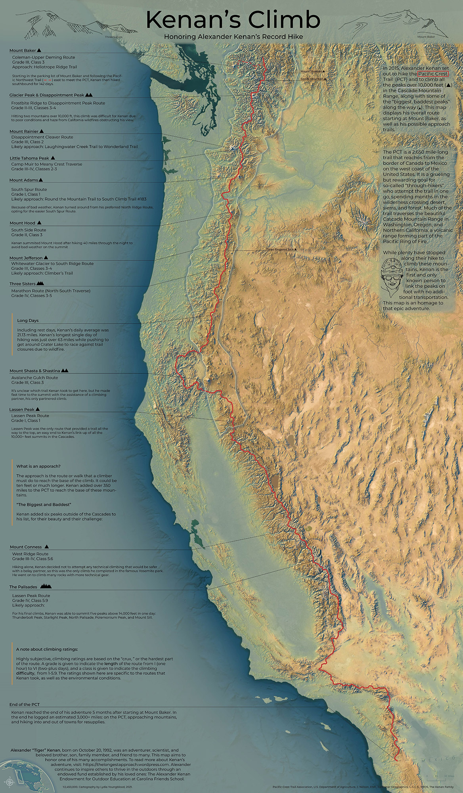
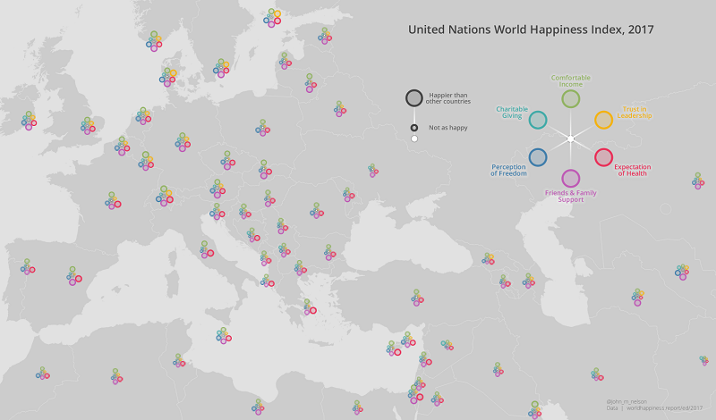

Figure 1. Thematic Map from Pinterest Searching
What is Thematic Mapping?
As it is shown in Figure 2, Thematic Cartography is one of domains which is focused on observed or extracted attributes. Thematic Cartography is where attributes and techniques are predominants. Furthermore, the product of Thematic Cartography is Thematic Map.
We can conclude that Thematic Mapping is a process of creating a thematic map, where we need to look into thematic cartography theory and apply it into the process.
Figure 2. Cartography Domain

Figure 3. Proportional Symbol Map - Total GDP
{kind=link}
What is the goal of thematic mapping?
Thematic mapping is a cartographis process of making a thematic map. The thematic map itself is a map which can represent the various geographic phenomena(s), the location, and the information of its attribute at the same time. The goal of this map is to be able to show the audience about statistical information which usually can not be justified directly.

Figure 4.Mapping Sami Languages Nele Peschel
Good Map Examples
A good map always follows this quality below ⬇️
- shows an obvious idea which tells the purpose of the map
- visualizes with a good symbolization which is easy to read
- uses the data from a good source
- represents clear contents so it is not too crowded
- gives a legend which is easy to interpret

×

Percentage of People That Think Their Country Has Benefited From Being In The EU
Map created by Landgeist
Go to map source


Transit Map of Vienna (Redesign of the official map)
Map created by Iaroslav Boretskii
Go to map source


Population Age
Map created by Golebiowska, I., Korycka-Skorupa, J., and Slomska-Przech, K.
Go to map sourceMost Popular Destinations for German Emigrants in 2014
Map created by Golebiowska, I., Korycka-Skorupa, J., and Slomska-Przech, K.
Go to map source
